#2696 Land der Verfluchten
Alternativ: Santa Fe Trail
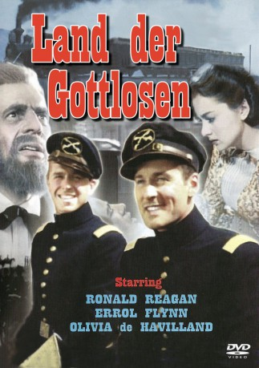 
 IMDB-Wertung: 6.3 / 10
IMDB-Wertung: 6.3 / 10  Metascore: 0
Metascore: 0 
1854: An der Militärakademie von West Point gibt es unter den Absolventen ernste Meinungsverschiedenheiten über den Nord-Südstaaten-Konflikt und die Sklavenfrage. Der Südstaatler Rader provoziert mit Propagandaschriften seine Kollegen und muss nach einem Streit mit Jeb Stuart und George Custer die Akademie verlassen. Die Streithähne werden nach Kansas, an die vorderste Front abkommandiert, wo der religiöse Fanatiker John Brown den Aufstand probt, um mit allen Mitteln die Sklaven zu befreien. Als Brown zum Angriff auf das große Waffenarsenal von Harper’s Ferry bläst, wird er dabei ausgerechnet von Rader unterstützt.
Jahr: 1940
Dauer: 110 Minuten
FSK: 16
Land: USA Studio: Warner Bros. Pictures Inc.Tonspuren: DD2.0 - ,
Untertitel:
Auflösung: 1080p (1488x1080) Größe: 8140 MB
Genre: Drama, Abenteuer, Krieg, Western, Liebe, Geschichte, Biographie
Regisseur: Michael Curtiz
Drehbuch: Robert Buckner
Soundtrack: Max Steiner
Darsteller:
- Errol Flynn als Jeb Stuart
- 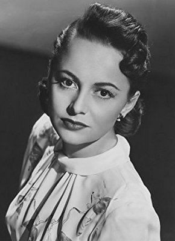 Olivia de Havilland als 'Kit Carson' Holliday
- Raymond Massey als John Brown
- 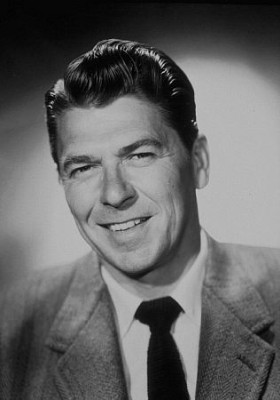 Ronald Reagan als George Custer
- Alan Hale als Tex Bell
 Van Heflin als Rader
Van Heflin als Rader- Guinn 'Big Boy' Williams als Windy Brody
- 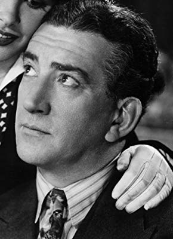 John Litel als Martin
- David Bruce als Phil Sheridan
- 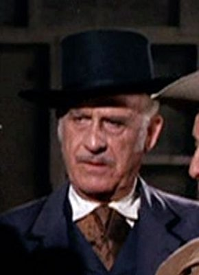 Frank Wilcox als James Longstreet
- 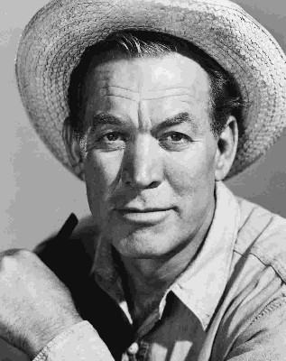 Ward Bond als Townley
- 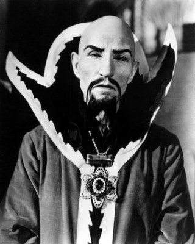 Charles Middleton als Gentry
- William Hopper als Officer , scenes deleted
- 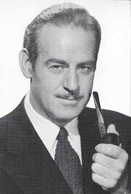 Roy Barcroft als Engineer , uncredited
 Trevor Bardette als Agitator in Palmyra , uncredited
Trevor Bardette als Agitator in Palmyra , uncredited- 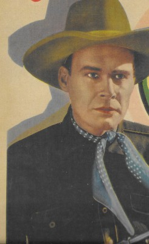 Lane Chandler als Adjutant , uncredited
- Mitzi Green als Girl at Wedding , uncredited
- 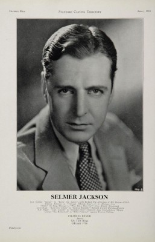 Selmer Jackson als Officer Reading Names of Graduates , uncredited
- Frank Mayo als Engineer , uncredited
- 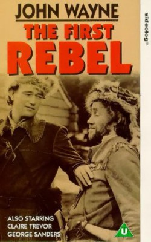 Eddy Waller als Workman , uncredited
- Maris Wrixon als Girl at Wedding , uncredited
- William Lundigan als Bob Holliday
- Gene Reynolds als Jason Brown
- Henry O'Neill als Cyrus Holliday
- 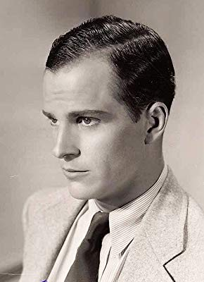 Alan Baxter als Oliver Brown
- 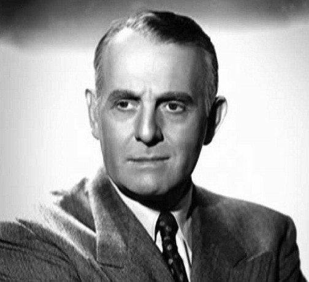 Moroni Olsen als Robert E. Lee
- Hobart Cavanaugh als Barber Doyle
- Charles D. Brown als Major Sumner
- 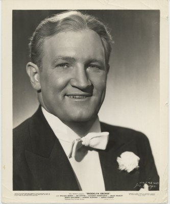 Joe Sawyer als Kitzmiller
- 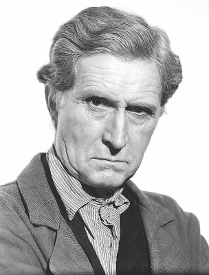 Russell Simpson als Shubel Morgan
- Erville Alderson als Jefferson Davis
- Spencer Charters als Conductor
- Susan Peters als Charlotte
- William Marshall als George Pickett
- George Haywood als John Hood
- Cliff Clark als Instructor , scenes deleted
- Edmund Cobb als Guard , scenes deleted
- 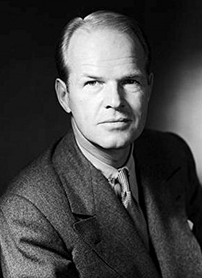 Louis Jean Heydt als Farmer , scenes deleted
- Edward Peil Sr. als Guard , scenes deleted
 Addison Richards als Minister , scenes deleted
Addison Richards als Minister , scenes deleted- 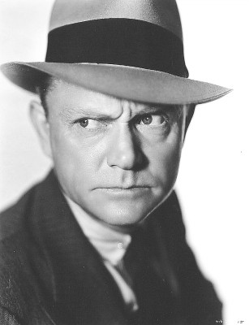 Harry Strang als Sergeant , scenes deleted
- Emmett Vogan als Lieutenant , scenes deleted
- 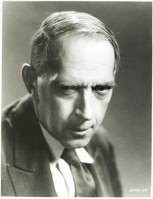 Arthur Aylesworth als Abolitionist at Russell's House , uncredited
 Edward Biby als Party Guest , uncredited
Edward Biby als Party Guest , uncredited- 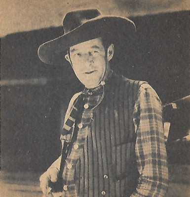 Al Bridge als Palmyra Townsman , uncredited
- Jess Lee Brooks als Doorman at Washington Party , uncredited
- Georgia Caine als Officer's Wife at Party , uncredited
- Lucia Carroll als Girl at Wedding , uncredited
- Eddy Chandler als Armory Guard , uncredited
- Bud Cokes als Cadet , uncredited
Datei: X:\HD-Western-1900-1959\Land der Verfluchten (1940, FSK16, 1488x1080).mkv seit 03.12.2015
Festplatte: HD Eastern+Western
 Es gibt insgesamt 98 Filme in der Gruppe 'HD-Western-1900-1959'
Es gibt insgesamt 98 Filme in der Gruppe 'HD-Western-1900-1959'